KimCad turns a description of a functional object into a validated, printer-ready file, and optionally sends it to a real printer — all through a conversation, with no CAD skills. This walkthrough follows the full v3.0 experience from setup to a started print.
The bundled Windows installer carries everything. The walkthrough explains the unsigned-app SmartScreen warning and exactly what to click, with GitHub provenance and a SHA-256 checksum.
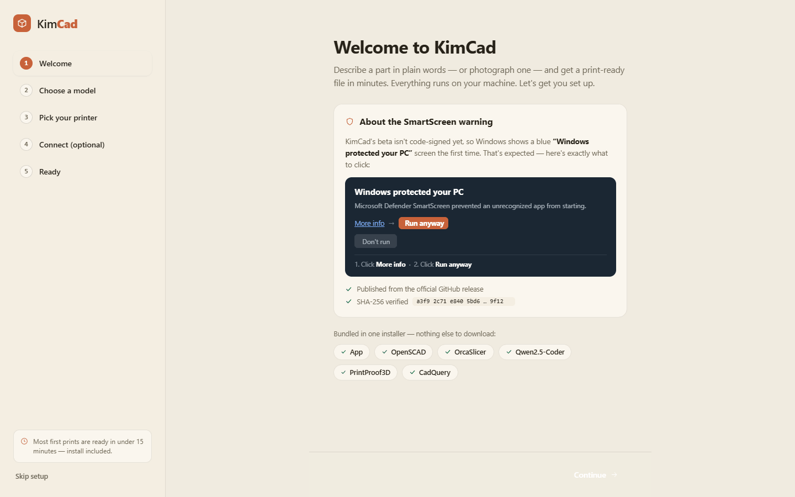
Qwen2.5-Coder (fast default) or Gemma 4 E4B (proven non-China alternative) — both run fully offline. An OpenRouter key is optional; the local path always works.
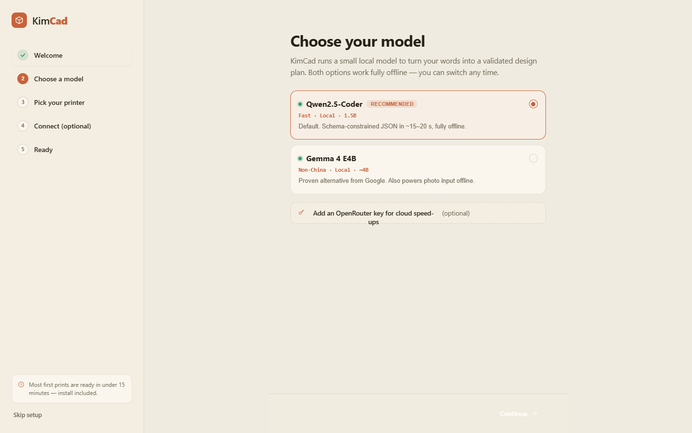
Tested profiles for the top-5 makers set the build volume and slicing profile so every printability check matches the user's actual hardware.
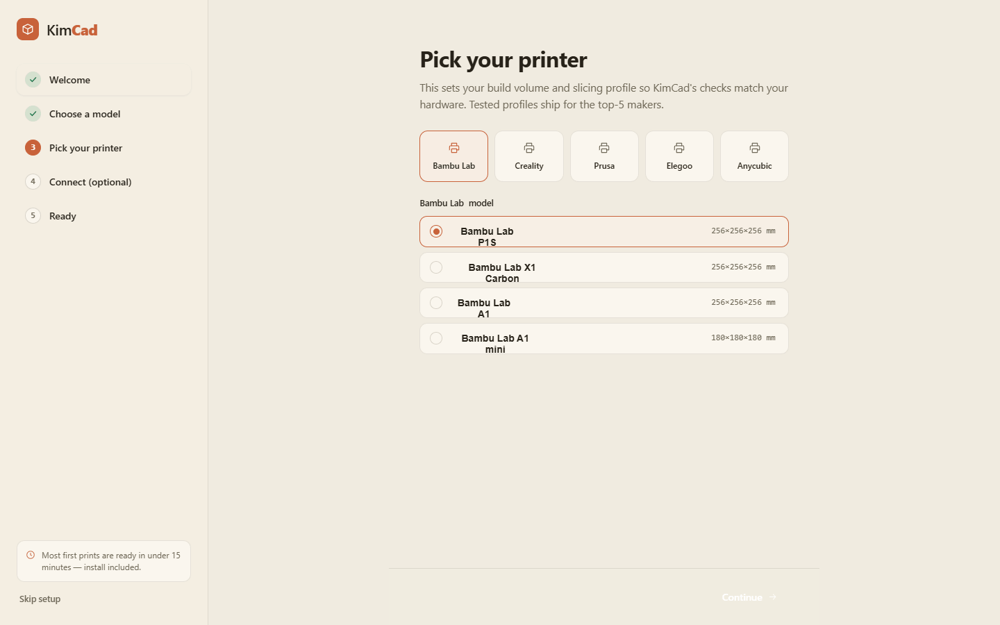
Skip and just download files, or connect the printer — the form adapts per protocol (Bambu Developer Mode, OctoPrint/Moonraker, PrusaLink). KimCad never auto-starts a print.
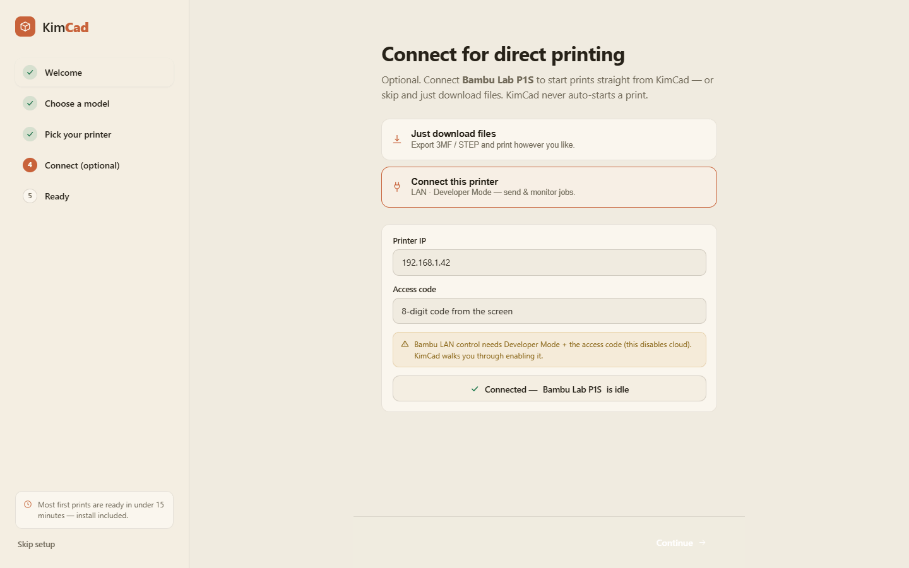
A recap of the chosen model, printer and connection. Everything is changeable later from the gear menu.
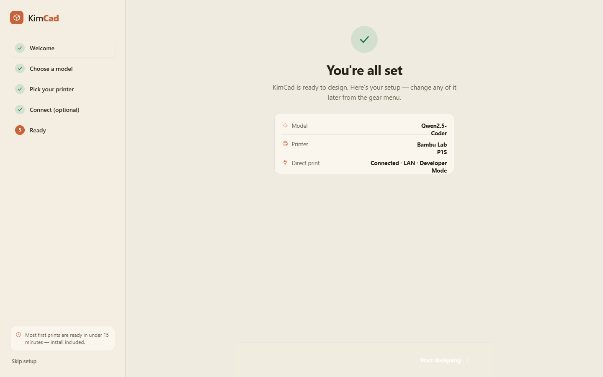
No CAD, no jargon. Type a functional object or pick a starting point. A secondary "Start from a photo" path is there for broken or existing parts.
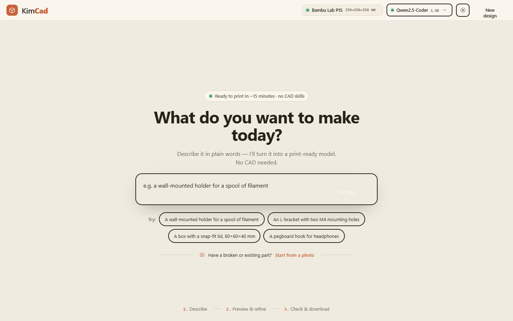
KimCad estimates dimensions and features from the image into a DesignPlan draft — with per-field confidence — which the user confirms or corrects before anything is built. The photo never becomes the delivered geometry.
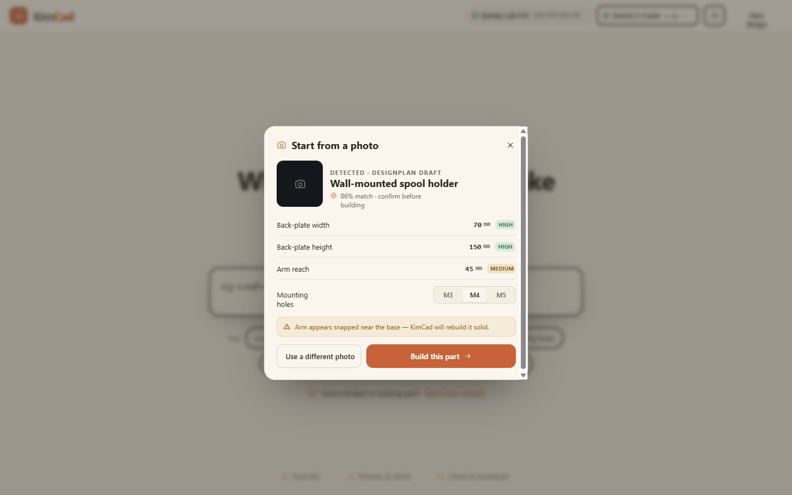
When a load-bearing dimension is missing, KimCad asks a single question — here, the mounting screw size — rather than guessing.
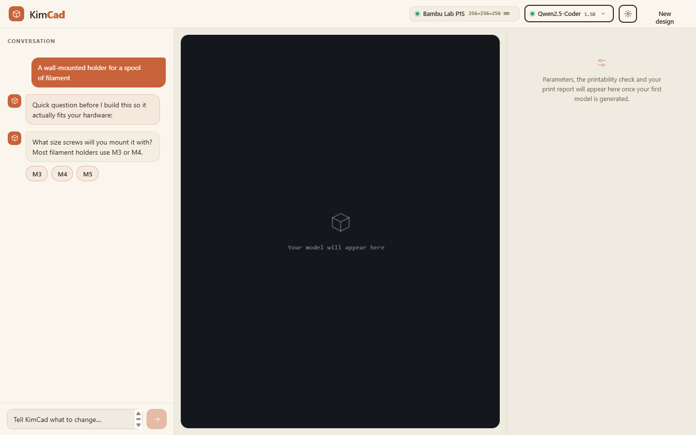
Live X/Y/Z dimensions on the build plate, conversational refinement, click-to-point feature placement, and parameter sliders that re-render locally in under a second. The Printability Gate flags issues against the chosen printer and material.
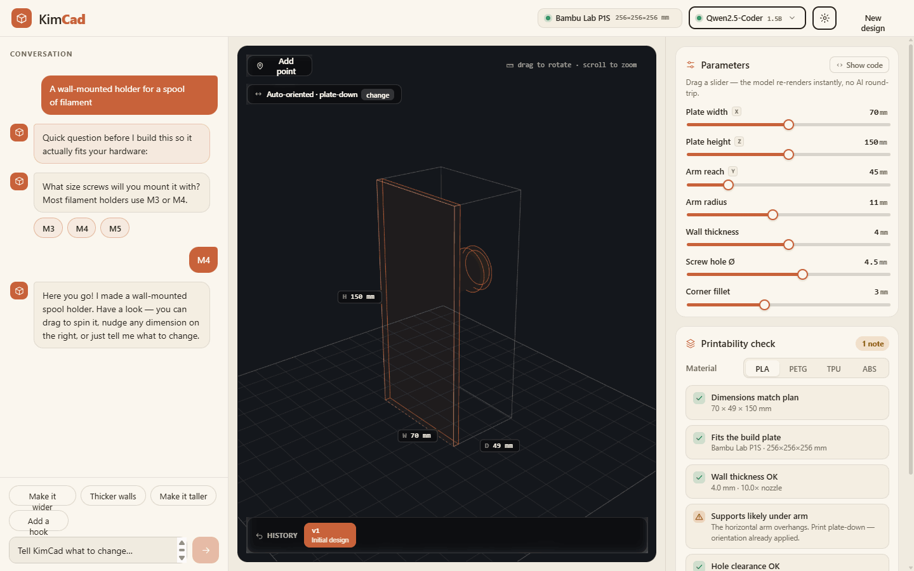
Smart Mesh scores print-readiness from the geometry, profiles and accumulated history — with risks, recommendations, confidence and a comparison to similar past prints — above a full print report. Safe 3MF by default; STEP for CAD; G-code only after confirmation.
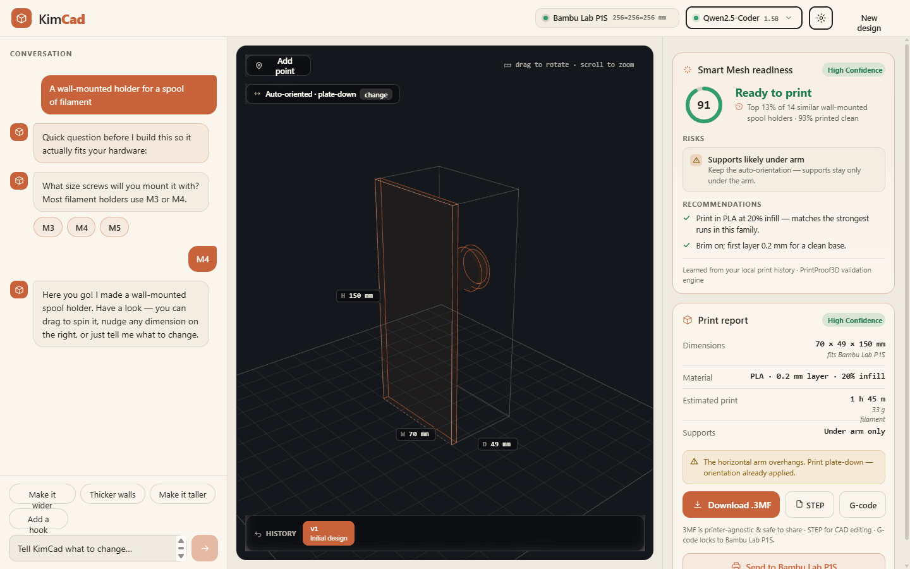
Direct execution shows live printer status, then asks the user to confirm geometry, printer, material and profile. A final explicit click is required before any command leaves the app.
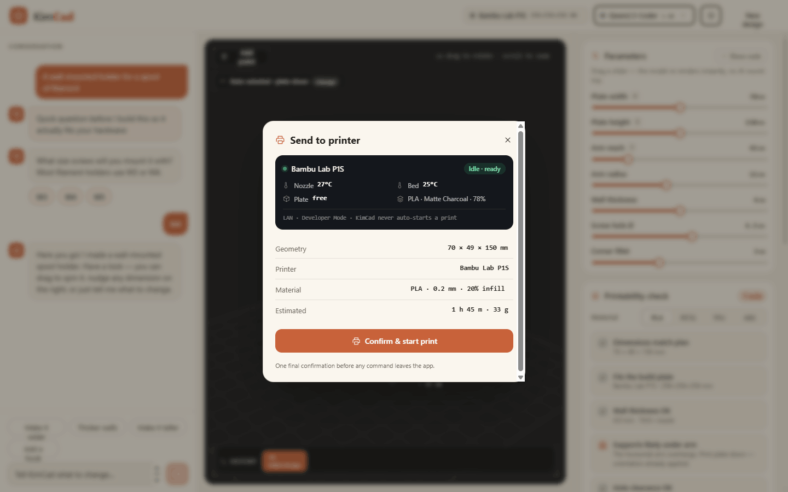